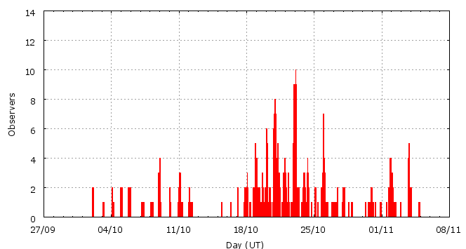

This page shows automated results of the Orionids 2008, based on visual data entered through the IMO electronic report form. Send your feedback regarding this page to Geert Barentsen or visit the project pages. Note that these automated results may not be suitable for scientific use!
Page generated: 2008 December 9 at 3:01 UT.
ZHRmax = 39 based on 3141 Orionids in 684 data intervals, assuming fixed population index r = 2.0 and zenith correction 1/sin(hR).

| Time (UT) | Solarlon | nINT | nORI | ZHR | |
|---|---|---|---|---|---|
| 2008-10-02 02:56 | 189.172 | 9 | 4 | 2 | +-1 |
| 2008-10-03 23:06 | 190.983 | 12 | 14 | 3 | +-1 |
| 2008-10-04 20:26 | 191.859 | 9 | 15 | 3 | +-1 |
| 2008-10-05 22:40 | 192.937 | 3 | 3 | 6 | +-3 |
| 2008-10-07 09:45 | 194.379 | 6 | 6 | 3 | +-1 |
| 2008-10-08 22:24 | 195.887 | 9 | 17 | 3 | +-1 |
| 2008-10-10 09:30 | 197.331 | 12 | 15 | 6 | +-2 |
| 2008-10-11 04:32 | 198.115 | 24 | 36 | 5 | +-1 |
| 2008-10-12 04:40 | 199.110 | 7 | 35 | 7 | +-1 |
| 2008-10-15 22:19 | 202.809 | 2 | 8 | 9 | +-3 |
| 2008-10-17 09:32 | 204.264 | 21 | 30 | 10 | +-2 |
| 2008-10-18 19:16 | 205.660 | 25 | 80 | 14 | +-2 |
| 2008-10-19 15:17 | 206.488 | 29 | 166 | 24 | +-2 |
| 2008-10-20 13:53 | 207.424 | 77 | 505 | 35 | +-2 |
| 2008-10-21 10:51 | 208.293 | 56 | 508 | 39 | +-2 |
| 2008-10-22 20:35 | 209.691 | 95 | 397 | 27 | +-1 |
| 2008-10-23 05:52 | 210.076 | 99 | 501 | 27 | +-1 |
| 2008-10-24 05:55 | 211.075 | 38 | 331 | 24 | +-1 |
| 2008-10-25 14:38 | 212.434 | 33 | 171 | 15 | +-1 |
| 2008-10-26 12:54 | 213.359 | 14 | 87 | 12 | +-1 |
| 2008-10-27 20:20 | 214.667 | 31 | 72 | 11 | +-1 |
| 2008-10-28 14:10 | 215.409 | 10 | 13 | 7 | +-2 |
| 2008-10-30 20:10 | 217.658 | 12 | 46 | 7 | +-1 |
| 2008-10-31 17:19 | 218.539 | 6 | 12 | 3 | +-1 |
| 2008-11-02 01:06 | 219.865 | 25 | 49 | 3 | +-0 |
| 2008-11-03 16:04 | 221.491 | 11 | 12 | 3 | +-1 |
| 2008-11-04 07:46 | 222.147 | 9 | 8 | 2 | +-1 |
For each estimation interval: time is the middle of the interval, nINT is the number of observing periods and nORI is the number of Orionids involved. ZHR = (1 + sum nORI) / sum(Teff/C) where Teff is the effective observing time and C is the total correction for limiting magnitude, clouds and zenith correction. The solar longitudes refer to equinox J2000.0.
Data has been received from 61 observers in 19 countries. Thank you for your efforts!

| Observer | Country | Teff | nORI |
|---|---|---|---|
| Salvador Aguirre | Mexico | 29.90h | 229 |
| Pierre Bader | Germany | 5.30h | 18 |
| Jean-marie Biets | Belgium | 1.82h | 14 |
| Jean-marie Biets | Belgium | 4.17h | 37 |
| Geoff Carstairs | Australia | 0.75h | 0 |
| Tibor Csorgei | Slovakia | 0.99h | 9 |
| Raka Dabhade | India | 1.50h | 9 |
| Mayuresh Desai | India | 3.00h | 1 |
| Suraj Deshpande | India | 1.50h | 16 |
| Owen Dietrich | United States | 1.00h | 5 |
| Sietse Dijkstra | Netherlands | 21.47h | 122 |
| Todor Dimitrov | Bulgaria | 7.48h | 30 |
| John Drummond | New Zealand | 1.00h | 12 |
| Paige Fronheiser | United States | 1.00h | 6 |
| William Godley | United States | 6.67h | 50 |
| Sylvie Gorkova | Czech Republic | 16.00h | 41 |
| Mitja Govedic | Slovenia | 5.58h | 17 |
| Pavol Habuda | Slovakia | 2.61h | 35 |
| Shy Halatzi | Israel | 2.78h | 15 |
| Wayne T. Hally | United States | 36.29h | 200 |
| Vilem Heblik | Czech Republic | 1.25h | 2 |
| Carl Hergenrother | United States | 2.42h | 29 |
| Kamil Hornoch | Czech Republic | 8.73h | 82 |
| Surbhi Jain | India | 1.00h | 8 |
| Carl Johannink | Netherlands | 3.70h | 25 |
| Javor Kac | Slovenia | 6.88h | 4 |
| Yann Kempf | France | 2.03h | 7 |
| Jakub Koukal | Czech Republic | 96.58h | 735 |
| Peter Van Leuteren | Netherlands | 13.28h | 87 |
| Anna S. Levina | Israel | 1.50h | 13 |
| Adam Marsh | Australia | 4.00h | 29 |
| Pierre Martin | Canada | 9.13h | 164 |
| Bruce Mccurdy | Canada | 3.00h | 22 |
| Mukul Mhaskey | India | 2.50h | 20 |
| Ivo Micek | Czech Republic | 1.83h | 15 |
| Koen Miskotte | Netherlands | 6.54h | 106 |
| Sirko Molau | Germany | 2.47h | 37 |
| Vikrant Narang | India | 1.00h | 10 |
| Martin Nedved | Czech Republic | 2.54h | 25 |
| Daniel Van Os | Netherlands | 2.42h | 22 |
| Jurgen Rendtel | Germany | 18.67h | 105 |
| Mikiya Sato | Japan | 1.00h | 7 |
| Tomoko Sato | Japan | 0.50h | 4 |
| Alex Scholten | Netherlands | 3.50h | 30 |
| Rene Scurbecq | Belgium | 3.67h | 30 |
| Hideki Seo | Japan | 1.00h | 9 |
| Nikhil Shewale | India | 3.00h | 2 |
| Rohan Shewale | India | 3.00h | 5 |
| Wesley Stone | United States | 1.96h | 35 |
| Kazumi Terakubo | Japan | 1.50h | 16 |
| Rushikesh Tilak | India | 1.00h | 6 |
| Shigeo Uchiyama | Japan | 0.92h | 12 |
| Michel Vandeputte | Belgium | 31.08h | 242 |
| Ruud Van Leuteren | Netherlands | 4.57h | 59 |
| Valentin Velkov | Bulgaria | 6.95h | 73 |
| William Watson | United States | 3.96h | 54 |
| William Watson | United States | 4.91h | 3 |
| Thomas Weiland | Austria | 23.62h | 174 |
| Lukasz Wozniak | Poland | 4.00h | 9 |
| Desislava Zhivkova | Bulgaria | 3.15h | 2 |
Create your own analysis!
Rate intervals: ori2008_rate.csv (CSV-format).
Magnitude distributions: ori2008_magn.csv (CSV-format).